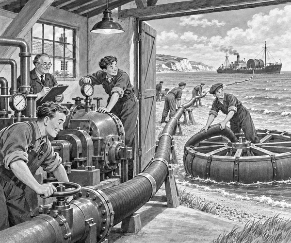

In 1944, World War Two was still being fought.
Allied troops were moving into France.
Their trucks and tanks needed fuel.
Lots and lots of fuel.
Ships could carry it across the English Channel.
But rough weather could stop a ship.
Enemy attacks made each trip dangerous.
British engineers had a bold idea.
“Let us put a pipe under the sea.”
The secret project was called PLUTO.
Its name meant Pipeline Under The Ocean.
First, the team needed a pipe that could bend.
An ordinary stiff pipe might crack as it was laid.
So engineers made a strong, flexible kind.
It was built in layers, rather like a giant armoured cable.
They also made a steel kind of pipe.
The steel pipe was wound around a huge floating drum.
The drum was called a Conundrum.
A boat pulled it across the water.
Round and round the drum turned.
Out rolled the pipe.
Down it sank to the seabed.
Roll. Splash. Sink.
The work was kept secret.
Some pumps were hidden inside ordinary buildings.
From outside, they did not look like part of a great fuel system.
One route began on the Isle of Wight.
Another began at Dungeness in Kent.
Powerful pumps pushed fuel from England.
The fuel travelled through the pipe beneath the waves.
Then it reached France.
There, it could help keep Allied vehicles moving.
Pipe fact: PLUTO used two main sorts of undersea pipe. One was flexible. The other was made from steel.
Secret fact: Pumping equipment was sometimes hidden in everyday buildings, including a seaside golf pavilion.
PLUTO did not carry all the fuel.
Tankers still carried most of it.
Yet the pipe was a clever extra route.
It showed what engineers could do when a problem seemed impossible.
They made new pipes.
They built secret pumps.
They crossed the sea without a bridge.
Far below the Channel waves, fuel flowed through the secret pipe.